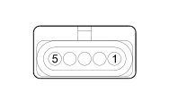

M015A PLUG PREHEATING CONTROL UNIT (FRONT)
- Path
- Electrical equipment > 3 CONNECTORS > M INTERMITTENT AND TIMED ELECTRONIC DEVICES > M015 PLUG PREHEATING CONTROL UNIT > M015A PLUG PREHEATING CONTROL UNIT (FRONT)
- Kind
- connector pinout (pin -> wire colour -> other end)
- Applies to
- engines: 1.3 JTD 16v; all production periods
- Interactive page
- https://sloeber94.github.io/elrnDB-fPnd/en/#/169003436
Applies to: engines: 1.3 JTD 16v; all production periods

Wiring | Colour |
|---|---|
NERO (black) |
Pin | Cable | Destination | |||
|---|---|---|---|---|---|
Sec.. | Colour | Node | Connect. | Pin | |
1 | 0,5 | N (black) | X | 2 | |
1 | |||||
1 | |||||
2 | |||||
3 | |||||
2 | 0,5 | L (blue) | 74 | ||
3 | 0,75 | MR (brown with red stripe) | 8 | ||
5 | 0,5 | W | 70 | ||
Topics linked from this page (5)
- 12 FRONT
- A001F BATTERY (FRONT)
- D097B SHORT CIRCUITING COUPLING (FRONT)
- K031 WATER IN DIESEL FILTER SENSOR
- M010B ENGINE MANAGEMENT ECU (FRONT)